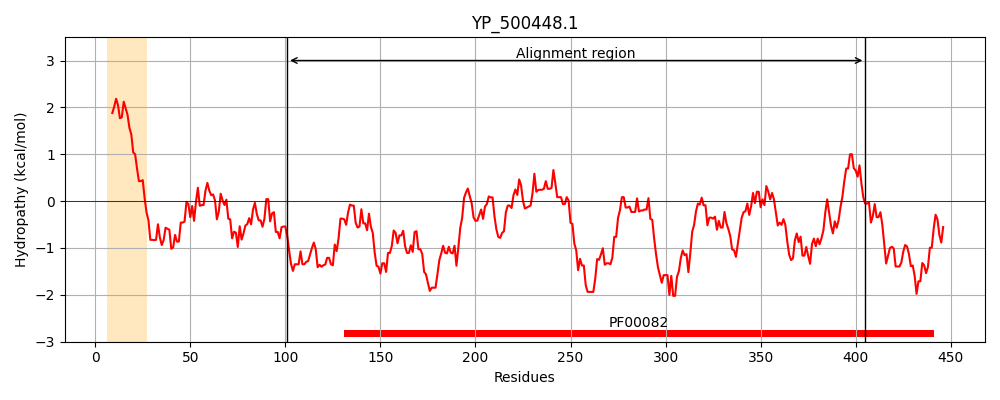
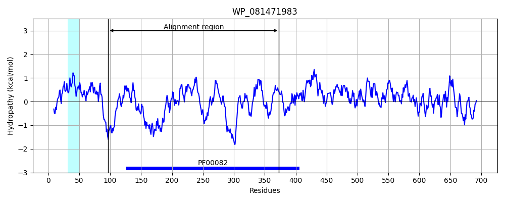
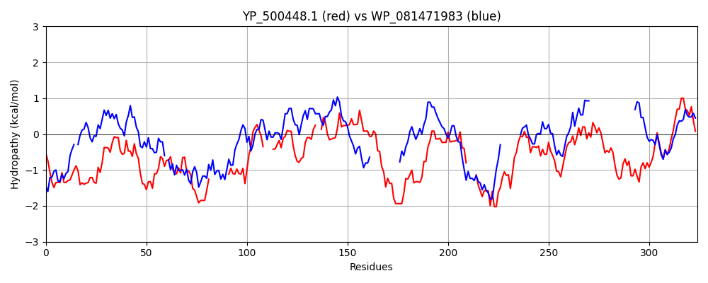

Hit Accession: WP_081471983
Hit TCID: 1.I.3.1.1
Hit Description: gnl|BL_ORD_ID|21480 gnl|TC-DB|WP_081471983.1|1.I.3.1.1 peptidase S8 [Gemmata obscuriglobus]
Mach Len: 324
e:0.000000
Query TMS Count : 1
Hit TMS Count: 1
TMS-Overlap Score: 0.000000
Predicted Substrates:CHEBI:25367;molecule, CHEBI:33839;macromolecule
BLAST Alignment:
Score: 192 , Bit scores: 78 bits, E-value: 1.6e-15, Alignment length: 324, Percentage identity: 27
Query: 101 DRTSNESLFSRQWDMNKITNNGASYDDLPKHANTKIAIIDTGVMKNHDDLKNNFSTDSKNLVPLNGFRGTEPEETGDVHDVN---------DRKGHGTMVSGQTSANGK----LIGVAPNNKFTMYRVFGSKKTE--LLWVSKAIVQAANDGNQVINISVGSYIILDKNDHQTFRKDEKVEYDALQKAINYAKKKKSIVVAAAGNDGIDV----NDKQKLKLQREYQGNGEVKDVPASMDNVVTVGSTDQKSNLSEFSNFGMNYTDIAAPGGSFAYLNQFGVDKWMNEGYMHKENILTTANNGRYIYQAGTSLATPKVSGALAL 405
DR N++ + + + +T +++ + + IA+ID+GV H DL N T+ +P NG DVH N D HGT V+G A G + G+ N K G+ L ++ A G +V N S GS D A A+ A+ I V++AGN G D ND+ L++ Y DNV+ V + D + L FSN+G+ +AAPG IL+T G Y GTS+ATP V+GA+AL
Sbjct: 97 DRRPNDTDYKSLYGI-PLTGTNLAWNVSTGNPDFVIAVIDSGVDYTHPDLAANIWTNLGE-IPDNGVDDDGNGYVDDVHGYNFSNNTGDPLDVDPHGTHVAGTIGAVGNNGDGVTGINWNVKIMALNFLGTGPDSGALSGAIASLNYAVTMGAKVSNNSWGS--------------DGGGRSAAFTAALTAARDAGHIFVSSAGNGGFDGVGDNNDQNPLRMPSNYS---------TQFDNVIAVAAIDNNNQLGSFSNYGVRTVTLAAPG----------------------VQILSTVPGGGYDTYDGTSMATPHVAGAIAL 373 | Protein Hydropathy Plots: |
|---|
|  |  |
Pairwise Alignment-Hydropathy Plot:
|
|---|
|  |